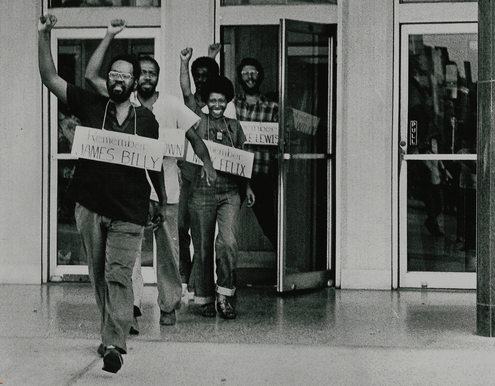
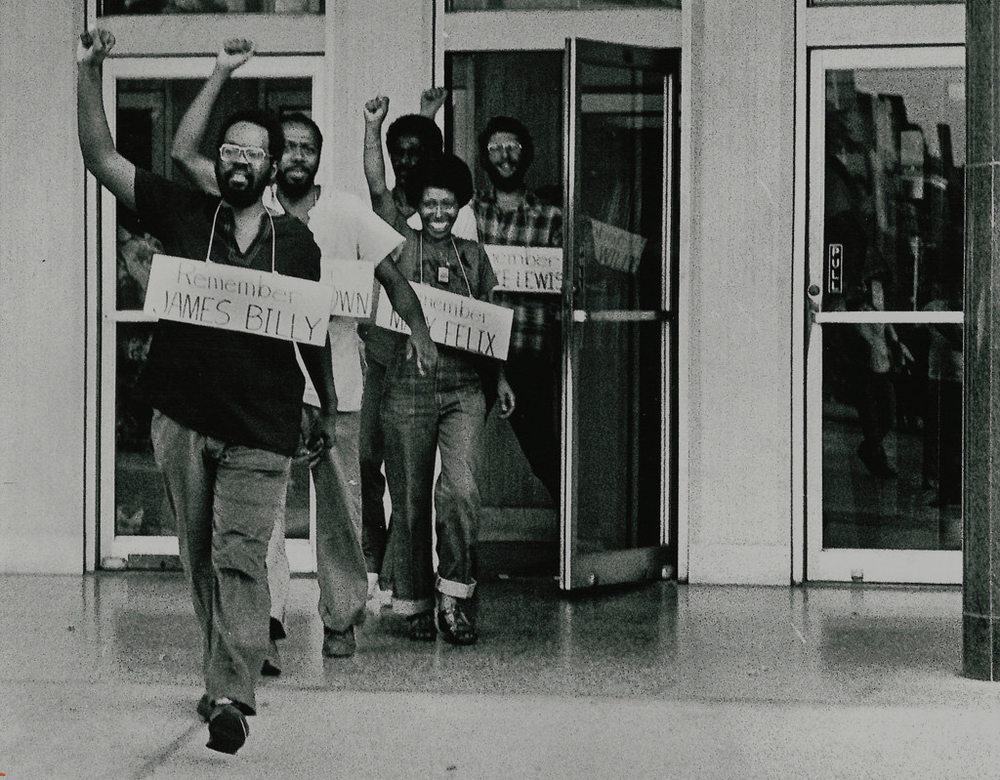

Police Brutality
1960 - 1990
Police brutality was rampant — far worse than today, by most measures — and white policemen who killed black citizens were rarely prosecuted. Indeed, the events in Ferguson, followed by the deaths of Eric Garner in Staten Island and Walter Scott in South Carolina, echo a string of police killings decades ago, from Ronald Stokes, a Los Angeles member of the Nation of Islam in 1962, to Clifford Glover, a 10-year-old New York boy shot in 1973. Among the first black leaders who called for retaliation was Robert Williams, an NAACP man in North Carolina who, after confrontations with the Ku Klux Klan, urged blacks to arm themselves in a 1962 book called “Negroes With Guns.” After fleeing to Cuba, Williams called for black servicemen to kill their white superiors during the Cuban missile crisis.
Black Panther Party
Black Panther Party, original name Black Panther Party for Self-Defense, African American revolutionary party, founded in 1966 in Oakland, California, by Huey Newton and Bobby Seale. The party’s original purpose was to patrol African American neighbourhoods to protect residents from acts of police brutality. The Panthers eventually developed into a Marxist revolutionary group that called for the arming of all African Americans, the exemption of African Americans from the draft and from all sanctions of so-called white America, the release of all African Americans from jail, and the payment of compensation to African Americans for centuries of exploitation by white Americans. At its peak in the late 1960s, Panther membership exceeded 2,000, and the organization operated chapters in several major American cities.
Malcolm X
Malcolm X (1925–1965) was an American Muslim minister and human rights activist. Some saw him as a courageous advocate for the rights of blacks, a man who indicted white America in the harshest terms for its crimes against black Americans; others accused him of preaching racism and violence. He has been called one of the greatest and most influential African Americans in history.
His father was killed when he was six and his mother was placed in a mental hospital when he was thirteen, after which he lived in a series of foster homes. In 1946, at age 20, he went to prison for larceny and breaking and entering. While in prison, he became a member of the Nation of Islam (NOI), changing his birth name Malcolm Little to Malcolm X because, he later wrote, Little was the name that "the white slavemaster ... had imposed upon [his] paternal forebears". After his parole in 1952, he quickly rose to become one of the organization's most influential leaders, serving as the public face of the controversial group for a dozen years. In his autobiography, Malcolm X wrote proudly of some of the social achievements the Nation made while he was a member, particularly its free drug rehabilitation program. The Nation promoted black supremacy, advocated the separation of black and white Americans, and rejected the civil rights movement for its emphasis on integration.
Huey P. Newton
Huey Percy Newton (February 17, 1942 – August 22, 1989) was a revolutionary African-American political activist who, along with Bobby Seale, co-founded the Black Panther Party in 1966. He continued to pursue graduate studies, eventually earning a Ph.D. in social philosophy.In 1989 he was murdered in Oakland, California by Tyrone Robinson, a member of the Black Guerrilla Family, in a dispute over drug dealing. An illiterate high-school graduate, Newton taught himself how to read before attending Merritt College in Oakland and the San Francisco School of Law. While at Merritt he met Seale. In Oakland in 1966 they formed the Black Panther group in response to incidents of alleged police brutality and racism and as an illustration of the need for black self-reliance. At the height of its popularity during the late 1960s, the party had 2,000 members in chapters in several cities.
Civil Rights Act
1964
The Civil Rights Act of 1964, which ended segregation in public places and banned employment discrimination on the basis of race, color, religion, sex or national origin, is considered one of the crowning legislative achievements of the civil rights movement. First proposed by President John F. Kennedy, it survived strong opposition from southern members of Congress and was then signed into law by Kennedy’s successor, Lyndon B. Johnson. In subsequent years, Congress expanded the act and passed additional civil rights legislation such as the Voting Rights Act of 1965.
The bill was called for by U.S. President John F. Kennedy in his Report to the American People on Civil Rights of June 11, 1963, in which he asked for legislation "giving all Americans the right to be served in facilities which are open to the public—hotels, restaurants, theaters, retail stores, and similar establishments"—as well as "greater protection for the right to vote". Kennedy delivered this speech in the aftermath of the Birmingham campaign and the growing number of demonstrations and protests throughout the southern United States. Kennedy was moved to action following the elevated racial tensions and wave of black riots in the spring 1963.
Emulating the Civil Rights Act of 1875, Kennedy's civil rights bill included provisions to ban discrimination in public accommodations, and to enable the U.S. Attorney General to join in lawsuits against state governments which operated segregated school systems, among other provisions. However, it did not include a number of provisions deemed essential by civil rights leaders, including protection against police brutality, ending discrimination in private employment, or granting the Justice Department power to initiate desegregation or job discrimination lawsuits.[9]
Dr. Martin Luther King
Martin Luther King, Jr. was a social activist and Baptist minister who played a key role in the American civil rights movement from the mid-1950s until his assassination in 1968. King sought equality and human rights for African Americans, the economically disadvantaged and all victims of injustice through peaceful protest. He was the driving force behind watershed events such as the Montgomery Bus Boycott and the 1963 March on Washington, which helped bring about such landmark legislation as the Civil Rights Act and the Voting Rights Act. King was awarded the Nobel Peace Prize in 1964 and is remembered each year on Martin Luther King, Jr. Day, a U.S. federal holiday since 1986.